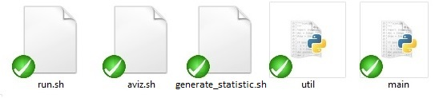
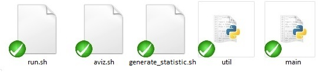

Manual Instructions
Table of Contents:
To run the system you need to have Python 2.4 and up, and if you want to use a fast version of Gay - Bern potential you need Swig 1.3 and up.
These are present on Phelafel and Tamnun.
To start running, you only need to go to the main project library, and then write in the shell: "./run.sh MODEL_NAME"
Where MODEL_NAME should be replaced with the name of the model you use (if you don't write anything it will use the default model).
You can choose - "2d_small, "3d_small", "2d_large", "3d", "fixed", "sphere" or "default".
You can also add another model as explained below in "How to write a configuration file" section.
You can find more details about each model under "Models" section.
You should not write "MODEL_NAME.py" or give it a path! The system knows to take it from models library automatically.
If you need help you can also run " ./run.sh MODEL_NAME -h" or "./run.sh MODEL_NAME --help" and get an additional help.
If you wish to start from a specific temperature without creating\changing another configuration file you can run with the command- "./run.sh MODEL_NAME INITIAL_TEMPERATURE=___" and complete the wanted temperature instead of the "___".
If you have already started a simulation and stopped before it has finished, the system will ask you if you want to continue the simulation- write "yes" if you do, "no" if not.
After running the system you can see the visual result in AViz by running: "./aviz.sh OUTPUT_TITLE"
Where OUTPUT_TITLE should be replaced by the name of the run directory as shown after the simulation finishes, or simply the model that was run (it will take the last one chronologically).
You must have AViz in order to use it.
More details are under "runs" section.
If you wish to generate some statistics of the simulations you have done, that's also very easy - all you need to do is write in the shell (after finishing the simulations): " ./generate_stat.sh MODEL_NAME"
That will create a web page called "compare_chart.html" inside the folder "web" with all of the statistics neatly displayed.
If you want to add the animations from AViz to those statistics you should add at the end of the line in shell that runs the statistics: "-a" or "--aviz"
You must have AViz in order to use it.
More details about the statistics are under the"statistics" section.


 


lc.py - This class represents the system that we are working with.
It holds the positions and angles of molecules in a liquid crystal, and can
perform a Monte Carlo Metropolis cooling of the liquid crystal.
Constants.py - contains physical constants such as Boltzman's constant, Planck's constant and the g factor.
It is possible to add some other constant here if one wishes to.
utils.py - contains some useful methods, some of them can be find in newer additions of Python.
This folder contains the Monte Carlo algorithm methods.
You should not change anything here.
You can choose:
- "fixed" - the cylinders will stay at their places
- "2d_small" - A system of 3X3 cylinders in 2 dimensions, uses the Gay- Berne Potential. Periodic boundary conditions in one direction, the other is fixed.
- "3d_small" - A system of 5X5X5 cylinders in 3 dimensions, uses the Gay- Berne Potential. Periodic boundary conditions in two directions, the other is fixed.
- "2d_large" - A system of 10X10 cylinders in 2 dimensions, uses the Gay- Berne Potential.Periodic boundary conditions in one direction, the other is fixed.
- "3d" - A system of 10X10X10 cylinders in 3 dimensions, uses the Gay- Berne Potential, Periodic boundary conditions in two directions, the other is fixed.
You can also add another one as written below in "How to add a configuration file".
We have
- "FixedNearestNeighboursPotential" approximation
- "SphereNearestNeighboursPotential" approximation
The potentials - - "GayBernesPotential"
- "LenardJonesPotential"
You can also add another one as written below in "How to add a new potential".
After each run of the simulation the system will save all of the states it has gone through, as well as the ".xyz" files for AViz.
Inside the "runs" folder you can find a sub folder for each model you have used so far.
Any folder like this contains sub folders:
- "Output" - contains more folders with time stamps. the stamp is the time you started running the simulation.
Each one contains all the ".xyz" files and a list file ".lst" for AViz.
- States - contains all the states the system went through during the simulation.
- run.log - a log file with all the simulation details like shown during the simulation.
- MODEL_NAME.py - the model file the simulation was run with.
First of all you should go to the library "models", then you can copy the content of the configuration file "default.py" and name your file as you wish (with the end of .py of course). You can also copy another file that is more suitable to your needs, and change that.
Now you only need to change the parameters in your file, so it would be like the system you are willing to get.
More explanations for some system parameters:
- DIMENSIONS = [number of cylinders in x direction, number of cylinders in y direction, number of cylinders in z direction]
- BOUNDARY_CONDITIONS = ["Boundary condition for the first direction", "Boundary condition for the second direction",...,"Boundary condition for the n'th direction"] - "P" for Periodic, "F" for fixed.
- INITIAL_SPACING = [The spacing between spin locations in x direction, The spacing between spin locations in y direction , The spacing between spin locations in z direction]
- INITIAL_SPIN_ORIENTATION = [The initial spin orientation vector in x direction , The initial spin orientation vector in y direction , The initial spin orientation vector in z direction]
There are more parameters you can change but everything is explained in the file itself as well.
You can change all the potential parameter-  ,
, ,
, ,
, ,
,
- POTENTIAL = name of the potential approximation you want to use, your can choose-"FixedNearestNeighboursPotential" , "SphereNearestNeighboursPotential" , or add a new potential as explained below in "How to add a new potential section".
- TWO_SPINS_POTENTIAL= "GayBernesPotential" , "LenardJonesPotential" , or add a new potential as explained below in "How to add a new potential section".
You should only write the name of the potential as in the potential file, without a suffix of any kind.
It is also possible to change settings for nearest neighbours such as maximum radius for neighbours.
You can also change the Cooling and Heating Algorithms properties such as (examples for cooling but the same for the heating process):
- MC_COOLER_SPACING_STDEV = The standard deviation of the Gaussian random spacing in the system.
- MC_COOLER_SPACING_FROM_ORIGINAL_LOCATION_CUTOFF = The maximum radius from the original location where the molecule can be.
- MC_COOLER_SPIN_STDEV = The standard deviation of the Gaussian random spin orientation.
- MC_COOLER_METROPOLIS_NUM_STEPS = the number of Metropolis steps to perform in each cooling steps.
- MC_COOLER_MAX_STEPS = the number of steps in the cooling process to perform the Metropolis algorithm before lowering the temperature further.
- MC_COOLER_TEMPERATURES = frange(INITIAL_TEMPERATURE, FINAL_TEMPERATURE, -CHANGING_IN_EACH_STEP)
- MC_COOLER_AVIZ_OUTPUT_PATH = The path to which to output the AVIZ files
You should only change the values and nothing else!
First of all you should go to the library "potentials", then you should copy the content of the file "potential.py" and name your file as you wish (with the end of .py of course). You might opt to copy an existing potential that more closely fits your needs, and create a new file to start with.
The next step is to change the class name:
- If you want to add a new type of approximation you can delete everything under "TwoSpinsPotential" and change the name of Potential to the new approximation.
- If you want to add a new potential you can delete everything between "Potential" and "TwoSpinsPotential" and change the name of TwoSpinsPotential to the new potential.
Now you need to write the calculation code. Use other potentials as boiler plates, they are well documented.
The last thing is to write the name of the new potential in the configuration file. (you can read more about how to create a new configuration file above.)
In order to change the axes you should only click on the axis's name and change it to what you want, the Chart will change respectively.
If you choose a place in the scroll-bar you will see the animation moving on the right of the page showing the right points on the left chart.
You must have run the statistic generator with the "-a" or "--aviz" command to see the Aviz pictures on the right of the page.
read more about it in "how to run the system" section.
It is also possible to choose the models you wish to investigate. It is done by selecting the wanted models on the right side of the main chart.
Another thing you can change is the colour of the points in the chart, on the right of the chart, according to temperature for example.
You can also change the type of chart- linear, time bubbles etc...